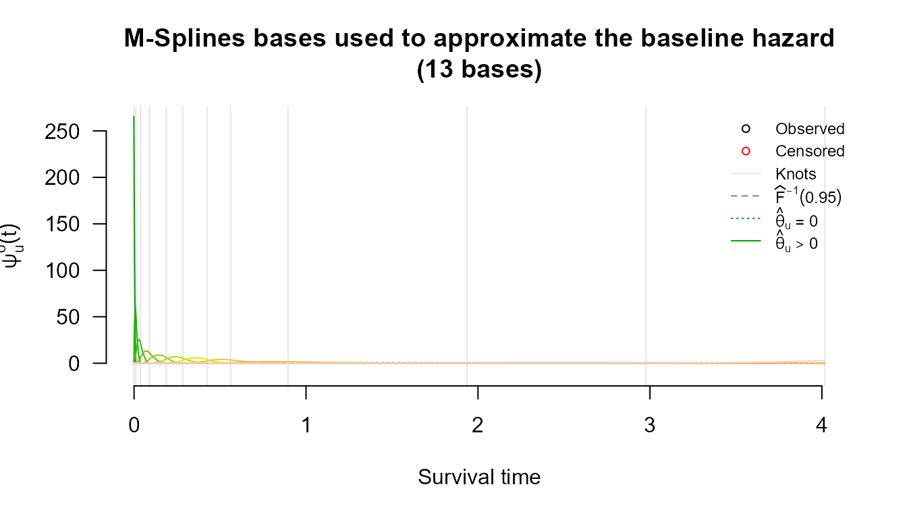
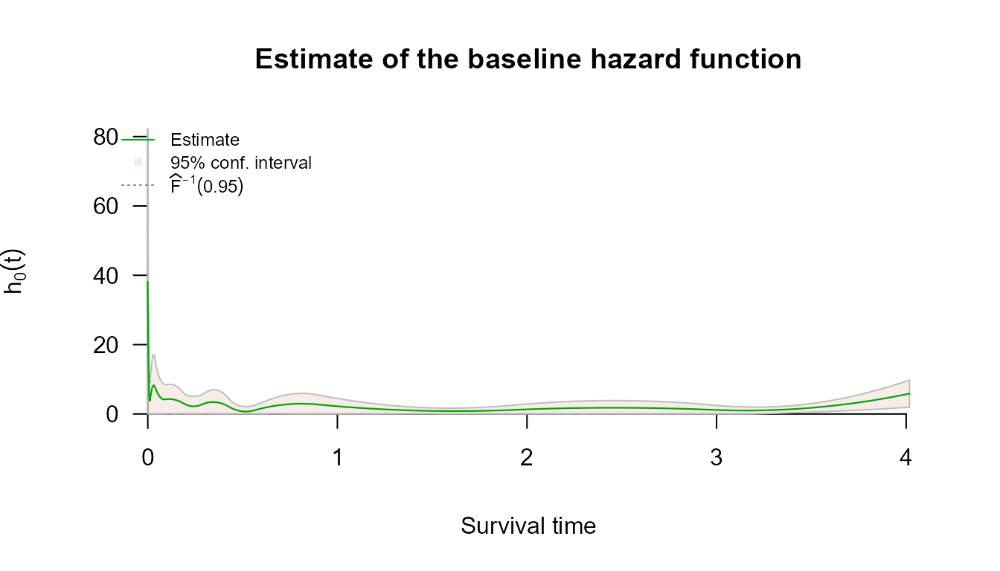
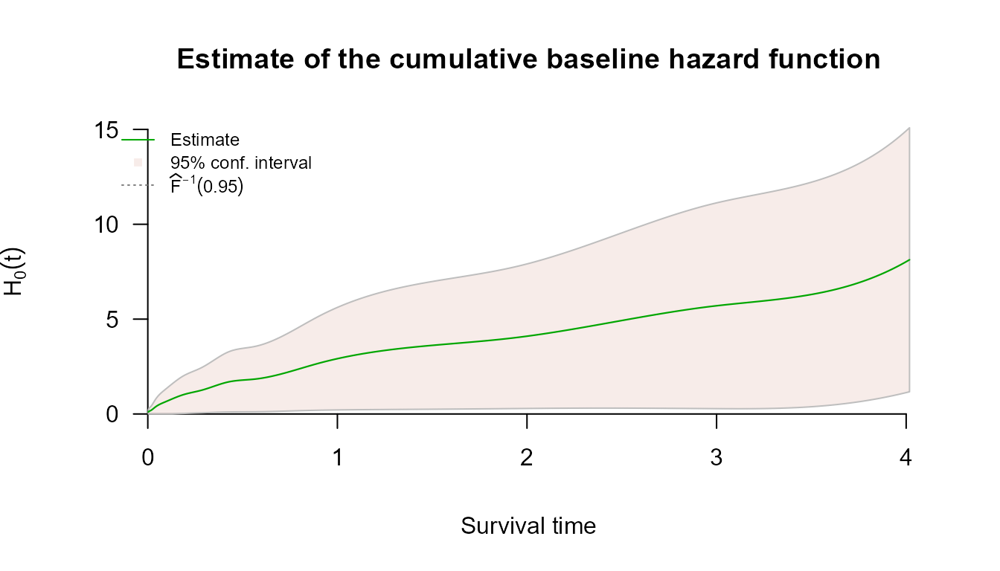
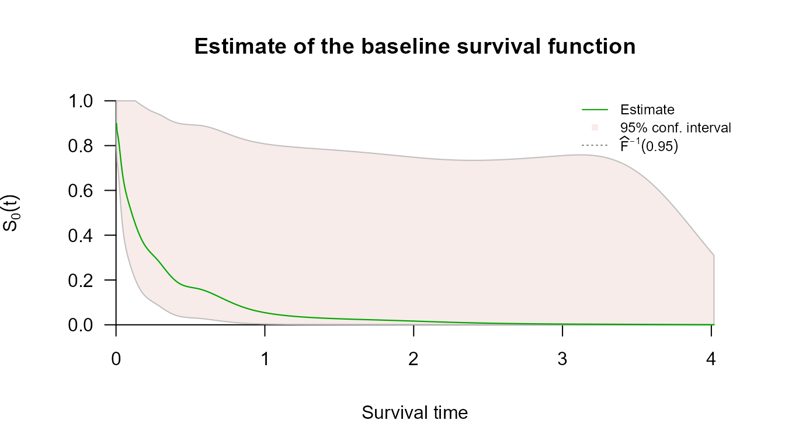

Left Censoring with survivalMPL
left-censoring.RmdOverview
A survival time is left censored when the event is known to have happened already by the time the subject is first examined, but not when. All that is recorded is an upper bound : the event occurred somewhere in . This arises whenever the outcome is detected by inspection rather than observed as it happens — a tumour already present at the first scan, seroconversion already complete at enrolment, a milestone already reached at the first assessment.
The likelihood contribution is the distribution function rather than the survivor function,
which the partial likelihood cannot accommodate. Because
coxph_mpl() estimates
explicitly, left-censored observations are handled directly, and may be
mixed freely with exact events and right- and interval-censored
observations in the same fit.
Encoding left-censored observations
Left censoring uses the type = "interval2" response,
with NA in place of the unknown lower endpoint:
library(survivalMPL)
#> Loading required package: survival
#> Loading required package: MASS
library(survival)
Surv(c(NA, 2, 3, 5), c(7, 4, NA, 5), type = "interval2")
#> [1] 7- [2, 4] 3+ 5The four observations above are, in order: left censored at 7
(7-), interval censored on
,
right censored at 3 (3+), and an exact event at 5.
Surv() records the distinction in its status code, and
coxph_mpl() dispatches on that code:
s <- Surv(c(NA, 2, 3, 5), c(7, 4, NA, 5), type = "interval2")
data.frame(status = s[, 3],
meaning = c("left censored", "interval censored",
"right censored", "exact event"))
#> status meaning
#> 1 2 left censored
#> 2 3 interval censored
#> 3 0 right censored
#> 4 1 exact eventNote that NA here is information, not
missingness: these rows are kept, not dropped by
na.action.
Example — pseudo-melanoma data
The bundled melanoma data (time to first local
recurrence,
,
simulated) is partly interval censored and contains all four observation
types. Recurrences already present at the first assessment are recorded
with a lower endpoint of zero:
data(melanoma)
with(melanoma, c(
exact = sum(t_L == t_R & is.finite(t_R)),
left = sum(t_L == 0 & is.finite(t_R)),
interval = sum(t_L > 0 & t_L < t_R & is.finite(t_R)),
right = sum(is.infinite(t_R))
))
#> exact left interval right
#> 117 132 35 16So 132 of the 300 subjects — 44% — are left censored.
Two equivalent encodings
Recording a left-censored observation as the interval
and recording it as left censored at
describe the same event, since
makes
and
identical. The data ship in the first form; the second is obtained by
replacing the zero lower endpoints with NA:
mel <- melanoma
mel$t_L2 <- ifelse(melanoma$t_L == 0, NA, melanoma$t_L)
mel$t_R2 <- ifelse(is.finite(melanoma$t_R), melanoma$t_R, NA)
rbind(
`as interval (0, t_R]` = table(factor(Surv(melanoma$t_L, melanoma$t_R,
type = "interval2")[, 3],
levels = 0:3)),
`as left censored` = table(factor(Surv(mel$t_L2, mel$t_R2,
type = "interval2")[, 3],
levels = 0:3))
)
#> 0 1 2 3
#> as interval (0, t_R] 16 117 0 167
#> as left censored 16 117 132 35The 132 observations move from status 3 (interval) to
status 2 (left), and fitting either version gives the same
answer:
ctrl <- coxph_mpl.control(
basis = "msplines",
n.obs = sum(melanoma$t_L == melanoma$t_R & is.finite(melanoma$t_R)),
smooth = 0,
max.iter = c(40, 2e4, 5e4)
)
fit_interval <- coxph_mpl(
Surv(t_L, t_R, type = "interval2") ~
Arm + Leg + Trunk + mm1to2 + mm2to4 + mm4plus + Female + Age_centred,
data = melanoma, control = ctrl)
fit_left <- coxph_mpl(
Surv(t_L2, t_R2, type = "interval2") ~
Arm + Leg + Trunk + mm1to2 + mm2to4 + mm4plus + Female + Age_centred,
data = mel, control = ctrl)
round(cbind(`interval (0, t_R]` = coef(fit_interval),
`left censored` = coef(fit_left)), 3)
#> interval (0, t_R] left censored
#> Arm -0.562 -0.576
#> Leg -0.087 -0.107
#> Trunk -0.239 -0.247
#> mm1to2 0.029 0.035
#> mm2to4 0.625 0.625
#> mm4plus 1.436 1.417
#> Female -0.089 -0.091
#> Age_centred 0.111 0.113The two columns agree to about 0.02. They are not bit-identical because the knot positions are quantiles of the observed endpoint times, and the two encodings present slightly different sets of endpoints — not because the likelihoods differ.
Inspecting the fit
summary(fit_left)
#>
#> coxph_mpl(formula = Surv(t_L2, t_R2, type = "interval2") ~ Arm +
#> Leg + Trunk + mm1to2 + mm2to4 + mm4plus + Female + Age_centred,
#> data = mel, control = ctrl)
#>
#> -----
#>
#> Cox Proportional Hazards Model Fit Using MPL
#>
#>
#> Penalized log-likelihood : -18.53554
#> Fixed smoothing value : 0
#> Convergence : Yes (233 iter.)
#>
#> Data : mel
#> Number of obs. : 300
#> Number of events : 117 (39%)
#> Number of cens. : 183 (61%)
#>
#> Regression parameters : Surv(t_L2, t_R2, type = "interval2") ~ Arm + Leg + Trunk + mm1to2 + mm2to4 + mm4plus + Female + Age_centred
#> Estimate Std. Error z-value Pr(>|z|)
#> Arm -0.575622 0.195228 -2.9485 0.003194 **
#> Leg -0.107484 0.171015 -0.6285 0.529670
#> Trunk -0.247131 0.155375 -1.5906 0.111710
#> mm1to2 0.034775 0.189120 0.1839 0.854108
#> mm2to4 0.624525 0.203372 3.0709 0.002135 **
#> mm4plus 1.416740 0.243783 5.8115 6.192e-09 ***
#> Female -0.090508 0.131017 -0.6908 0.489684
#> Age_centred 0.113420 0.048858 2.3214 0.020263 *
#> ---
#> Signif. codes: 0 '***' 0.001 '**' 0.01 '*' 0.05 '.' 0.1 ' ' 1
#>
#> Baseline hasard parameters approximated using M-Splines :
#> (2 (min/max) + 8 quantile knots + 2 equally spaced knots + 3 (order) - 2 = 13 parameters)
#> 1 2 3 4 5 6
#> 1.436162e-01 9.825969e-03 2.966489e-01 2.336807e-01 3.805598e-01 1.736077e-01
#> 7 8 9 11 13
#> 5.493765e-01 1.773562e-09 1.817603e+00 2.486888e+00 2.037200e+00
#>
#> -----
plot(fit_left)



Example — bcos2
The breast cosmesis data are mostly interval censored, but include a
handful of genuinely left-censored subjects, already coded with
NA:
data(bcos2)
table(status = Surv(bcos2$left, bcos2$right, type = "interval2")[, 3])
#> status
#> 0 2 3
#> 38 5 51
head(bcos2[is.na(bcos2$left), ])
#> left right treatment
#> 3 NA 7 Rad
#> 10 NA 8 Rad
#> 33 NA 5 Rad
#> 48 NA 22 RadChem
#> 63 NA 5 RadChemStatus 2 marks the left-censored rows; no special
handling is needed:
fit_bcos <- coxph_mpl(
Surv(left, right, type = "interval2") ~ treatment,
data = bcos2,
control = coxph_mpl.control(
basis = "msplines",
n.obs = nrow(bcos2),
max.iter = c(40, 2000, 4000),
smooth = 0
)
)
summary(fit_bcos)
#>
#> coxph_mpl(formula = Surv(left, right, type = "interval2") ~ treatment,
#> data = bcos2, control = coxph_mpl.control(basis = "msplines",
#> n.obs = nrow(bcos2), max.iter = c(40, 2000, 4000), smooth = 0))
#>
#> -----
#>
#> Cox Proportional Hazards Model Fit Using MPL
#>
#>
#> Penalized log-likelihood : -140.254
#> Fixed smoothing value : 0
#> Convergence : NO
#>
#> Data : bcos2
#> Number of obs. : 94
#> Number of events : 0 ( 0%)
#> Number of cens. : 94 (100%)
#>
#> Regression parameters : Surv(left, right, type = "interval2") ~ treatment
#> Estimate Std. Error z-value Pr(>|z|)
#> treatmentRadChem 0.87311 0.33348 2.6181 0.008841 **
#> ---
#> Signif. codes: 0 '***' 0.001 '**' 0.01 '*' 0.05 '.' 0.1 ' ' 1
#>
#> Baseline hasard parameters approximated using M-Splines :
#> (2 (min/max) + 8 quantile knots + 2 equally spaced knots + 3 (order) - 2 = 13 parameters)
#> 1 2 3 4 5 6
#> 4.284005e-02 1.608827e-02 5.030707e-02 3.116483e-02 1.317693e-01 1.213149e-01
#> 7 8 9 10 11 12
#> 2.396608e-02 2.067590e-01 2.068148e-01 6.402848e-10 4.310156e+00 6.628441e-01
#> 13
#> 6.628441e-01
#>
#> -----Next steps
- Interval Censoring covers the general partly interval-censored case, of which left censoring is the boundary instance.
- Right Censoring covers the standard scheme and left truncation.
- Basis Functions for the Baseline Hazard explains the choice of ; because enters the left-censored likelihood directly, that choice matters more here than for right-censored data alone.